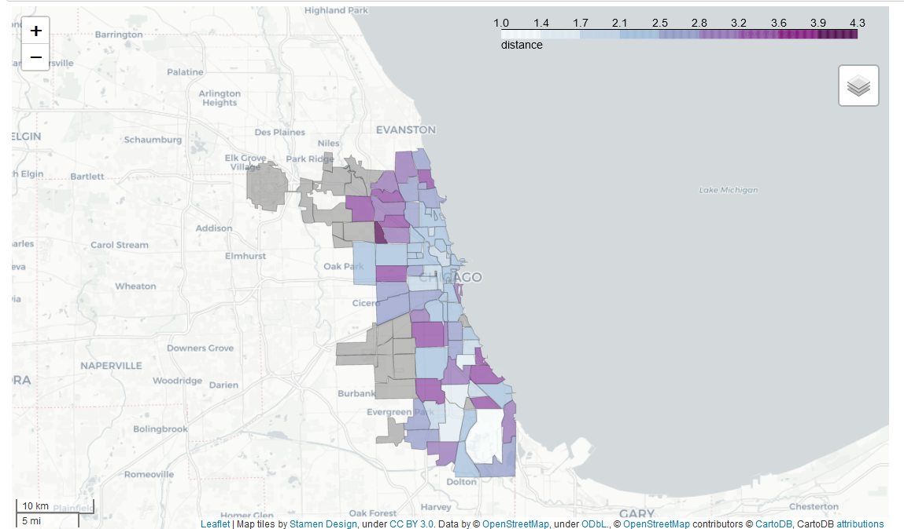
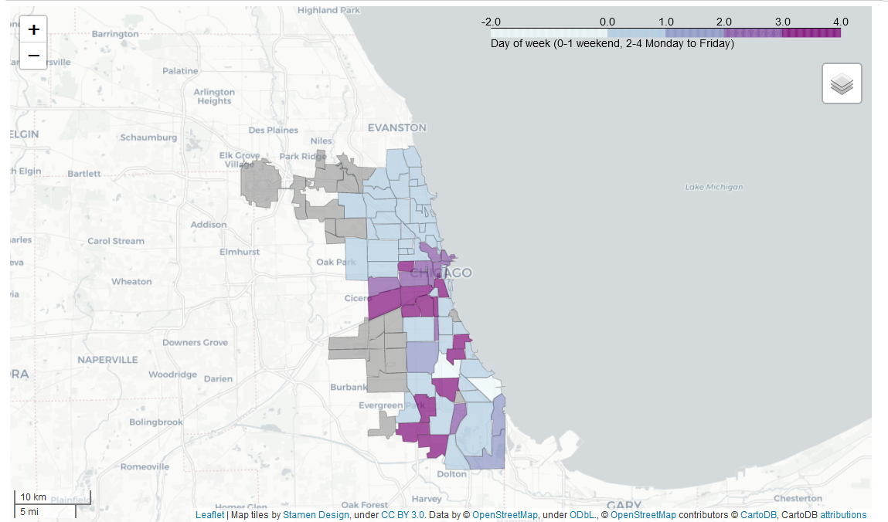
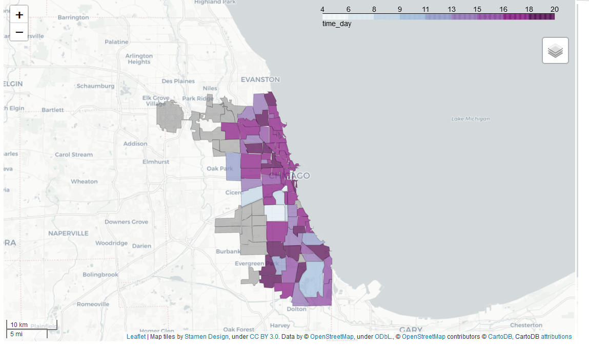
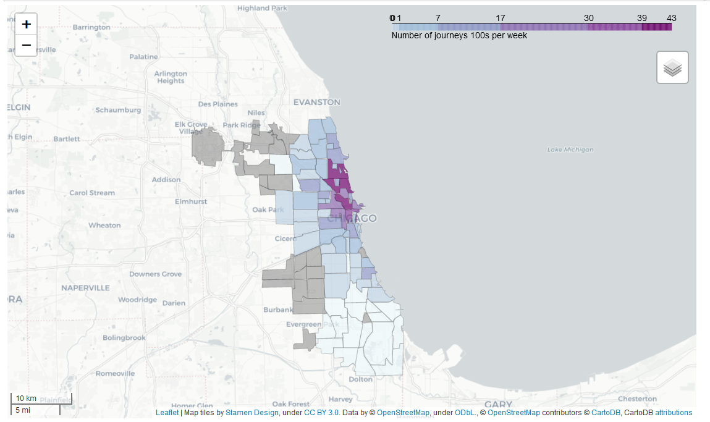
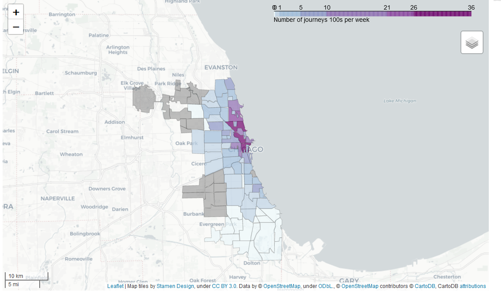
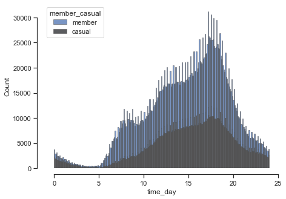
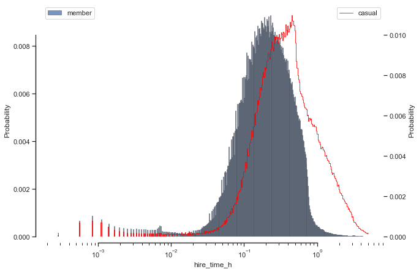
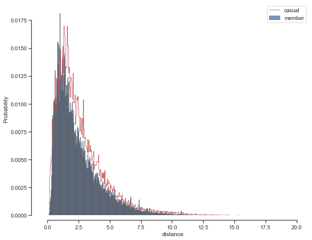
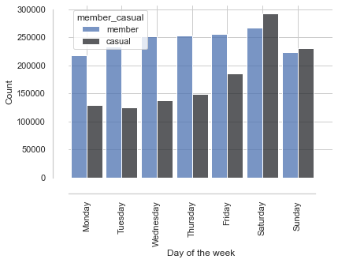

import pandas as pd
from bs4 import BeautifulSoup
import numpy as np
import requests
# from datetime import datetime, timezone
import os
import geopandas as gpd
#get the current working directory
owd=os.getcwd()
How Does a Bike-Share Navigate Speedy Success

Introduction
Some quick analysis on Cycle bike-share data from Chicago
Welcome to the Cyclistic bike-share analysis case study! In this case study, you will perform many real-world tasks of a junior data analyst. You will work for a fictional company, Cyclistic, and meet different characters and team members. In order to answer the key business questions, you will follow the steps of the data analysis process: ask, prepare, process, analyze, share, and act. Along the way, the Case Study Roadmap tables — including guiding questions and key tasks — will help you stay on the right path. By the end of this lesson, you will have a portfolio-ready case study. Download the packet and reference the details of this case study anytime. Then, when you begin your job hunt, your case study will be a tangible way to demonstrate your knowledge and skills to potential employers.
Some imports
A function to extract web zip files and save to /dat folder
We’ll just look at Q1 for 2020 data
The data for 2020 is split into Q1 and the rest is for each month. So we need to download and convert each to a data frame and then combine them together
def extractStuff(url):
import requests, zipfile, io
import os
owd=os.getcwd()
r = requests.get(url)
z = zipfile.ZipFile(io.BytesIO(r.content))
z.extractall(owd+"/dat/")
URL="https://divvy-tripdata.s3.amazonaws.com/"
noma =[['202004-divvy-tripdata'],
['202005-divvy-tripdata'],
['202006-divvy-tripdata'],
['202007-divvy-tripdata'],
['202008-divvy-tripdata'],
['202009-divvy-tripdata'],
['202010-divvy-tripdata'],
['202011-divvy-tripdata'],
['202012-divvy-tripdata']]
for nom in noma:
extractStuff(URL+ nom[0]+".zip")Load files, put in pandas data frame and have a look
Lets load each csv and combine them
for i,nom in enumerate(noma):
if i>0:
df=pd.read_csv(owd+"/dat/"+nom[0]+'.csv')
dfAll=pd.concat([df,dfAll])
print('1 ',nom[0])
else:
dfAll=pd.read_csv(owd+"/dat/"+nom[0]+'.csv')
print('2',nom[0])2 202004-divvy-tripdata
1 202005-divvy-tripdata
1 202006-divvy-tripdata
1 202007-divvy-tripdata
1 202008-divvy-tripdata
1 202009-divvy-tripdata
1 202010-divvy-tripdata
1 202011-divvy-tripdata
1 202012-divvy-tripdataHow many NaN stations?
print('The percentage start stations NaN = {}'.format(100*np.shape(dfAll[dfAll['start_station_id'].isna()])[0] / np.shape(dfAll)[0]) )#95 282 3 114 796
print('The percentage end stations NaN = {}'.format(100*np.shape(dfAll[dfAll['end_station_id'].isna()])[0] / np.shape(dfAll)[0]) )#95 282 3 114 796
bothNa=dfAll[dfAll['start_station_id'].isna() | dfAll['end_station_id'].isna()]
print('The percentage start stations NaN = {}'.format(100*np.shape(bothNa)[0] / np.shape(dfAll)[0]) )#95 282 3 114 796The percentage start stations NaN = 3.059012532441932
The percentage end stations NaN = 3.5745840177013197
The percentage start stations NaN = 4.889597906251324import copy
dfUse=copy.copy(dfAll[dfAll['start_station_id'].notnull() & dfAll['end_station_id'].notnull()])
dfUse.describe(include='all')| ride_id | rideable_type | started_at | ended_at | start_station_name | start_station_id | end_station_name | end_station_id | start_lat | start_lng | end_lat | end_lng | member_casual | |
|---|---|---|---|---|---|---|---|---|---|---|---|---|---|
| count | 2962495 | 2962495 | 2962495 | 2962495 | 2962495 | 2962495.0 | 2962495 | 2962495.0 | 2.962495e+06 | 2.962495e+06 | 2.962495e+06 | 2.962495e+06 | 2962495 |
| unique | 2962287 | 3 | 2568216 | 2556286 | 689 | 1301.0 | 690 | 1304.0 | NaN | NaN | NaN | NaN | 2 |
| top | 0A2B0949201A9D0C | docked_bike | 2020-09-07 15:19:26 | 2020-10-14 07:23:00 | Streeter Dr & Grand Ave | 35.0 | Streeter Dr & Grand Ave | 35.0 | NaN | NaN | NaN | NaN | member |
| freq | 2 | 2535257 | 12 | 13 | 32629 | 32192.0 | 34905 | 34467.0 | NaN | NaN | NaN | NaN | 1710201 |
| mean | NaN | NaN | NaN | NaN | NaN | NaN | NaN | NaN | 4.190534e+01 | -8.764452e+01 | 4.190559e+01 | -8.764481e+01 | NaN |
| std | NaN | NaN | NaN | NaN | NaN | NaN | NaN | NaN | 4.157203e-02 | 2.446731e-02 | 4.169299e-02 | 2.460637e-02 | NaN |
| min | NaN | NaN | NaN | NaN | NaN | NaN | NaN | NaN | 4.164850e+01 | -8.777470e+01 | 4.164850e+01 | -8.777470e+01 | NaN |
| 25% | NaN | NaN | NaN | NaN | NaN | NaN | NaN | NaN | 4.188316e+01 | -8.765840e+01 | 4.188338e+01 | -8.765862e+01 | NaN |
| 50% | NaN | NaN | NaN | NaN | NaN | NaN | NaN | NaN | 4.190096e+01 | -8.764117e+01 | 4.190096e+01 | -8.764182e+01 | NaN |
| 75% | NaN | NaN | NaN | NaN | NaN | NaN | NaN | NaN | 4.193120e+01 | -8.762773e+01 | 4.193125e+01 | -8.762775e+01 | NaN |
| max | NaN | NaN | NaN | NaN | NaN | NaN | NaN | NaN | 4.206490e+01 | -8.752823e+01 | 4.206501e+01 | -8.752823e+01 | NaN |
Now we need to convert the dates from object (i.e. string) to date format
next add a new column as time for hire in hours
dfUse.loc[:,'started_at']=pd.to_datetime(dfUse['started_at'],infer_datetime_format=True)
dfUse.loc[:,'ended_at']=pd.to_datetime(dfUse['ended_at'],infer_datetime_format=True)
delta=dfUse.iloc[:,3]-dfUse.iloc[:,2]
dd=delta.dt.total_seconds()/(60*60)
dfUse.insert(2,"hire_time_h",dd)
dfUse.head()| ride_id | rideable_type | hire_time_h | started_at | ended_at | start_station_name | start_station_id | end_station_name | end_station_id | start_lat | start_lng | end_lat | end_lng | member_casual | |
|---|---|---|---|---|---|---|---|---|---|---|---|---|---|---|
| 0 | 70B6A9A437D4C30D | classic_bike | 0.176944 | 2020-12-27 12:44:29 | 2020-12-27 12:55:06 | Aberdeen St & Jackson Blvd | 13157 | Desplaines St & Kinzie St | TA1306000003 | 41.877726 | -87.654787 | 41.888716 | -87.644448 | member |
| 39 | 15F369FDAED4E8E3 | electric_bike | 0.130556 | 2020-12-18 13:53:56 | 2020-12-18 14:01:46 | Larrabee St & Armitage Ave | TA1309000006 | Wells St & Walton St | TA1306000011 | 41.918112 | -87.643799 | 41.900129 | -87.634448 | member |
| 50 | 0CFD61DFE00E6043 | electric_bike | 0.030000 | 2020-12-28 17:10:25 | 2020-12-28 17:12:13 | Kingsbury St & Kinzie St | KA1503000043 | Desplaines St & Kinzie St | TA1306000003 | 41.889193 | -87.638576 | 41.889099 | -87.642479 | member |
| 87 | 244CB936487039B7 | docked_bike | 1.013056 | 2020-12-10 13:36:16 | 2020-12-10 14:37:03 | Clark St & Leland Ave | TA1309000014 | Clark St & Leland Ave | TA1309000014 | 41.967096 | -87.667429 | 41.967096 | -87.667429 | casual |
| 88 | B7AD5038F79637F9 | classic_bike | 0.101111 | 2020-12-20 13:09:04 | 2020-12-20 13:15:08 | Dearborn St & Monroe St | TA1305000006 | Kingsbury St & Kinzie St | KA1503000043 | 41.881320 | -87.629521 | 41.889177 | -87.638506 | member |
Maybe we want the day of the week?
The day of the week with Monday=0, Sunday=6.
dfUse.insert(3,'day_week',dfUse.loc[:,'started_at'].dt.dayofweek)
dfUse.head()| ride_id | rideable_type | hire_time_h | day_week | started_at | ended_at | start_station_name | start_station_id | end_station_name | end_station_id | start_lat | start_lng | end_lat | end_lng | member_casual | |
|---|---|---|---|---|---|---|---|---|---|---|---|---|---|---|---|
| 0 | 70B6A9A437D4C30D | classic_bike | 0.176944 | 6 | 2020-12-27 12:44:29 | 2020-12-27 12:55:06 | Aberdeen St & Jackson Blvd | 13157 | Desplaines St & Kinzie St | TA1306000003 | 41.877726 | -87.654787 | 41.888716 | -87.644448 | member |
| 39 | 15F369FDAED4E8E3 | electric_bike | 0.130556 | 4 | 2020-12-18 13:53:56 | 2020-12-18 14:01:46 | Larrabee St & Armitage Ave | TA1309000006 | Wells St & Walton St | TA1306000011 | 41.918112 | -87.643799 | 41.900129 | -87.634448 | member |
| 50 | 0CFD61DFE00E6043 | electric_bike | 0.030000 | 0 | 2020-12-28 17:10:25 | 2020-12-28 17:12:13 | Kingsbury St & Kinzie St | KA1503000043 | Desplaines St & Kinzie St | TA1306000003 | 41.889193 | -87.638576 | 41.889099 | -87.642479 | member |
| 87 | 244CB936487039B7 | docked_bike | 1.013056 | 3 | 2020-12-10 13:36:16 | 2020-12-10 14:37:03 | Clark St & Leland Ave | TA1309000014 | Clark St & Leland Ave | TA1309000014 | 41.967096 | -87.667429 | 41.967096 | -87.667429 | casual |
| 88 | B7AD5038F79637F9 | classic_bike | 0.101111 | 6 | 2020-12-20 13:09:04 | 2020-12-20 13:15:08 | Dearborn St & Monroe St | TA1305000006 | Kingsbury St & Kinzie St | KA1503000043 | 41.881320 | -87.629521 | 41.889177 | -87.638506 | member |
Lets also get the time on its own
dfUse.insert(4,'time_day',dfUse.loc[:,'started_at'].dt.hour + dfUse.loc[:,'started_at'].dt.minute/60)
dfUse.head()| ride_id | rideable_type | hire_time_h | day_week | time_day | started_at | ended_at | start_station_name | start_station_id | end_station_name | end_station_id | start_lat | distance | start_lng | end_lat | end_lng | member_casual | |
|---|---|---|---|---|---|---|---|---|---|---|---|---|---|---|---|---|---|
| 0 | 70B6A9A437D4C30D | classic_bike | 0.176944 | 6 | 12.733333 | 2020-12-27 12:44:29 | 2020-12-27 12:55:06 | Aberdeen St & Jackson Blvd | 13157 | Desplaines St & Kinzie St | TA1306000003 | 41.877726 | 1.491984 | -87.654787 | 41.888716 | -87.644448 | member |
| 39 | 15F369FDAED4E8E3 | electric_bike | 0.130556 | 4 | 13.883333 | 2020-12-18 13:53:56 | 2020-12-18 14:01:46 | Larrabee St & Armitage Ave | TA1309000006 | Wells St & Walton St | TA1306000011 | 41.918112 | 2.144117 | -87.643799 | 41.900129 | -87.634448 | member |
| 50 | 0CFD61DFE00E6043 | electric_bike | 0.030000 | 0 | 17.166667 | 2020-12-28 17:10:25 | 2020-12-28 17:12:13 | Kingsbury St & Kinzie St | KA1503000043 | Desplaines St & Kinzie St | TA1306000003 | 41.889193 | 0.323238 | -87.638576 | 41.889099 | -87.642479 | member |
| 87 | 244CB936487039B7 | docked_bike | 1.013056 | 3 | 13.600000 | 2020-12-10 13:36:16 | 2020-12-10 14:37:03 | Clark St & Leland Ave | TA1309000014 | Clark St & Leland Ave | TA1309000014 | 41.967096 | 0.000000 | -87.667429 | 41.967096 | -87.667429 | casual |
| 88 | B7AD5038F79637F9 | classic_bike | 0.101111 | 6 | 13.150000 | 2020-12-20 13:09:04 | 2020-12-20 13:15:08 | Dearborn St & Monroe St | TA1305000006 | Kingsbury St & Kinzie St | KA1503000043 | 41.881320 | 1.147392 | -87.629521 | 41.889177 | -87.638506 | member |
And the distance travelled
def distanceLatLong(lat1,lon1,lat2,lon2):
import numpy as np
def deg2rad(deg):
return deg * np.pi/180
R = 6371; # Radius of the earth in km
dLat = deg2rad(lat2-lat1) # deg2rad below
dLon = deg2rad(lon2-lon1)
a = np.sin(dLat/2) * np.sin(dLat/2) + \
np.cos(deg2rad(lat1)) * np.cos(deg2rad(lat2)) * \
np.sin(dLon/2) * np.sin(dLon/2)
c = 2 * np.arctan2(np.sqrt(a), np.sqrt(1-a))
d = R * c ## Distance in km
return dd=distanceLatLong(dfUse["start_lat"].values,dfUse["start_lng"].values,dfUse["end_lat"].values,dfUse["end_lng"].values)
dfUse.insert(11,'distance',d)
dfUse.describe()| hire_time_h | day_week | start_lat | distance | start_lng | end_lat | end_lng | |
|---|---|---|---|---|---|---|---|
| count | 2.962495e+06 | 2.962495e+06 | 2.962495e+06 | 2.962495e+06 | 2.962495e+06 | 2.962495e+06 | 2.962495e+06 |
| mean | 4.291666e-01 | 3.262215e+00 | 4.190534e+01 | 2.240406e+00 | -8.764452e+01 | 4.190559e+01 | -8.764481e+01 |
| std | 6.640800e+00 | 1.973614e+00 | 4.157203e-02 | 2.029178e+00 | 2.446731e-02 | 4.169299e-02 | 2.460637e-02 |
| min | -4.841661e+02 | 0.000000e+00 | 4.164850e+01 | 0.000000e+00 | -8.777470e+01 | 4.164850e+01 | -8.777470e+01 |
| 25% | 1.377778e-01 | 2.000000e+00 | 4.188316e+01 | 8.598642e-01 | -8.765840e+01 | 4.188338e+01 | -8.765862e+01 |
| 50% | 2.525000e-01 | 3.000000e+00 | 4.190096e+01 | 1.713410e+00 | -8.764117e+01 | 4.190096e+01 | -8.764182e+01 |
| 75% | 4.577778e-01 | 5.000000e+00 | 4.193120e+01 | 3.098683e+00 | -8.762773e+01 | 4.193125e+01 | -8.762775e+01 |
| max | 9.786672e+02 | 6.000000e+00 | 4.206490e+01 | 4.837080e+01 | -8.752823e+01 | 4.206501e+01 | -8.752823e+01 |
Some issues arose above
- hire_time_h max and min values
Looks like the error is there from the start, so lets delete them
do the same for long times
dfUse=dfUse[dfUse.hire_time_h>=0]
dfUse=dfUse[dfUse.hire_time_h<24]Lets drop some columns for space
dfUse.drop(columns=["ride_id", "started_at","ended_at","start_station_name","end_station_name"],inplace=True)
#,"start_station_id","end_station_id"]save
dfUse.to_csv('/data/df_2020.csv')
df=copy.copy(dfUse)df = pd.read_csv('/data/df_2020.csv')
dfC:\Users\44781\anaconda3\lib\site-packages\IPython\core\interactiveshell.py:3165: DtypeWarning: Columns (5,6) have mixed types.Specify dtype option on import or set low_memory=False.
has_raised = await self.run_ast_nodes(code_ast.body, cell_name,| Unnamed: 0 | rideable_type | hire_time_h | day_week | time_day | start_station_id | end_station_id | start_lat | distance | start_lng | end_lat | end_lng | member_casual | |
|---|---|---|---|---|---|---|---|---|---|---|---|---|---|
| 0 | 0 | classic_bike | 0.176944 | 6 | 12.733333 | 13157 | TA1306000003 | 41.877726 | 1.491984 | -87.654787 | 41.888716 | -87.644448 | member |
| 1 | 39 | electric_bike | 0.130556 | 4 | 13.883333 | TA1309000006 | TA1306000011 | 41.918112 | 2.144117 | -87.643799 | 41.900129 | -87.634448 | member |
| 2 | 50 | electric_bike | 0.030000 | 0 | 17.166667 | KA1503000043 | TA1306000003 | 41.889193 | 0.323238 | -87.638576 | 41.889099 | -87.642479 | member |
| 3 | 87 | docked_bike | 1.013056 | 3 | 13.600000 | TA1309000014 | TA1309000014 | 41.967096 | 0.000000 | -87.667429 | 41.967096 | -87.667429 | casual |
| 4 | 88 | classic_bike | 0.101111 | 6 | 13.150000 | TA1305000006 | KA1503000043 | 41.881320 | 1.147392 | -87.629521 | 41.889177 | -87.638506 | member |
| ... | ... | ... | ... | ... | ... | ... | ... | ... | ... | ... | ... | ... | ... |
| 2949984 | 84771 | docked_bike | 0.215278 | 3 | 16.166667 | 140.0 | 140.0 | 41.899000 | 0.000000 | -87.629900 | 41.899000 | -87.629900 | member |
| 2949985 | 84772 | docked_bike | 0.319167 | 3 | 17.933333 | 322.0 | 351.0 | 41.799600 | 1.056377 | -87.594700 | 41.803000 | -87.606600 | casual |
| 2949986 | 84773 | docked_bike | 1.886111 | 4 | 19.950000 | 236.0 | 182.0 | 41.907600 | 0.604983 | -87.638600 | 41.903200 | -87.634300 | casual |
| 2949987 | 84774 | docked_bike | 0.708611 | 3 | 17.983333 | 310.0 | 310.0 | 41.920100 | 0.000000 | -87.677900 | 41.920100 | -87.677900 | casual |
| 2949988 | 84775 | docked_bike | 0.100000 | 5 | 1.516667 | 138.0 | 138.0 | 41.904600 | 0.000000 | -87.640600 | 41.904600 | -87.640600 | casual |
2949989 rows × 13 columns
Put frequency location onto a map
import folium
from folium import plugins
from folium.plugins import HeatMap
lat=df['start_lat'].values
lon=df['start_lng'].values
latlon = [lat, lon]
maps = folium.Map(location=[lat[0],lon[0]],
zoom_start = 11)
latlon=np.transpose(latlon)
# Plot it on the map
HeatMap(latlon).add_to(maps)
# Display the map
maps
Bit of a mess, grouping by region may be better
Plot some choroplots
open and modify the geojson file- seems to make life easier later
import geopandas as gpd
fname='Chicago.geojson'
chicago = gpd.read_file(fname)
# neighborhoods aren't unique so lets use the index and call it ID
chicago.reset_index(inplace=True)
chicago.rename(columns={'index':'ID'},inplace=True)
chicago.drop(columns=['sec_neigh','shape_area','shape_len'],inplace=True)
chicago.to_file("Chi_.json", driver="GeoJSON")
chicago.head()| ID | pri_neigh | geometry | |
|---|---|---|---|
| 0 | 0 | Grand Boulevard | MULTIPOLYGON (((-87.60671 41.81681, -87.60670 ... |
| 1 | 1 | Printers Row | MULTIPOLYGON (((-87.62761 41.87437, -87.62760 ... |
| 2 | 2 | United Center | MULTIPOLYGON (((-87.66707 41.88885, -87.66707 ... |
| 3 | 3 | Sheffield & DePaul | MULTIPOLYGON (((-87.65833 41.92166, -87.65835 ... |
| 4 | 4 | Humboldt Park | MULTIPOLYGON (((-87.74060 41.88782, -87.74060 ... |
Now we want to convert each station to a region within the json file
First let’s create a variable for each station, with location and station_id
#use mean here just in case some slight differences- big ones lets hope not!
dfStat=df.groupby(by=['start_station_id']).mean()
dfStat=dfStat.drop(columns=['Unnamed: 0','hire_time_h','day_week','time_day','distance','end_lat','end_lng'])
dfStat.reset_index(inplace=True)
dfStat| start_station_id | start_lat | start_lng | |
|---|---|---|---|
| 0 | 2.0 | 41.876505 | -87.620535 |
| 1 | 3.0 | 41.867228 | -87.615357 |
| 2 | 4.0 | 41.856268 | -87.613345 |
| 3 | 5.0 | 41.874050 | -87.627709 |
| 4 | 6.0 | 41.886974 | -87.612813 |
| ... | ... | ... | ... |
| 1877 | TA1309000066 | 41.969101 | -87.674234 |
| 1878 | TA1309000067 | 41.803034 | -87.606613 |
| 1879 | WL-008 | 41.867122 | -87.641071 |
| 1880 | WL-011 | 41.880395 | -87.642727 |
| 1881 | WL-012 | 41.883364 | -87.641203 |
1882 rows × 3 columns
Now for each station we want a JSON-area code
This is slightly convoluted - scroll through each station - for each station find if it’s inside a Chigao_JSON region - if not we assign if a value 1000 - for those with no region find the nearest station that has a JSON-region (done in tab after this)
whatChoro = json ID whatwhat = station ID
from shapely.geometry import shape, Point
whatChoro=[]
whatwhat=[]
# check each polygon to see if it contains the point
i=0
# scroll through each station
for istat in range(np.shape(dfStat)[0]):
i=0
#create a point for the station
point=Point(dfStat.loc[istat,'start_lng'],dfStat.loc[istat,'start_lat'])
#scroll through each geometery
for feature in chicago.ID:
polygon = shape(chicago.loc[i,'geometry'])
if polygon.contains(point):
#this gives the json region ID
whatChoro.append(chicago.loc[i,'ID'])
#this give the station id
whatwhat.append(dfStat.loc[istat,'start_station_id'])
break
#if we don't get a match!!
if feature==chicago['ID'].iloc[-1]:
import copy
# find distances lat2/lng2 this location
# lat1/lng1 all locations
lat1_=copy.copy(dfStat['start_lat'])
lon1_=copy.copy(dfStat['start_lng'])
lat2_=dfStat.loc[istat,'start_lat']
lon2_=dfStat.loc[istat,'start_lng']
#this gives the json region ID
whatChoro.append(1000)
#this give the station id
whatwhat.append(dfStat.loc[istat,'start_station_id'])
i=i+1This does the cleaning up if they don’t have a json id
This will handle when we don’t get a match—> a reuse of the distance function with slight mods
def distanceLatLong_v2(lat1_,lon1_,lat2_,lon2_):
import numpy as np
import math
def deg2rad(deg):
return deg * np.pi/180
def inner(lat1,lon1,lat2,lon2):
R = 6371; # Radius of the earth in km
dLat = deg2rad(lat2-lat1) # deg2rad below
dLon = deg2rad(lon2-lon1)
a = np.sin(dLat/2) * np.sin(dLat/2) + \
np.cos(deg2rad(lat1)) * np.cos(deg2rad(lat2)) * \
np.sin(dLon/2) * np.sin(dLon/2)
c = 2 * math.atan2(np.sqrt(a), np.sqrt(1-a))
d = R * c ## Distance in km
if d==0:
d=1000
return d
if np.shape(lat1_)[0]>1:
d=[]
for i in range(np.shape(lat1_)[0]):
d.append(inner(lat1_[i],lon1_[i],lat2_,lon2_))
else:
d=inner(lat1_,lon1_,lat2_,lon2_)
return dthis scrolls through ones we didn’t match and finds nearest JSON-id we did match
for i in range(np.shape(dfStat)[0]):
if whatChoro[i]==1000:
#find distances lat2/lng2 this location
# lat1/lng1 all locations
lat1_=copy.copy(dfStat['start_lat'])
lon1_=copy.copy(dfStat['start_lng'])
lat2_=dfStat.loc[i,'start_lat']
lon2_=dfStat.loc[i,'start_lng']
ind=[idx for idx, element in enumerate(whatChoro) if element==1000]
lat1_[ind]=0
lon1_[ind]=0
d=distanceLatLong_v2(lat1_,lon1_,lat2_,lon2_)
indamin=d.index(min(d))
# whatwhat[i]=whatwhat[indamin]
whatChoro[i]=whatChoro[indamin]
print(i,indamin,whatChoro[i],whatChoro[indamin],min(d))554 474 48 48 3.218616605981318
555 474 48 48 1.5436541433245226
556 474 48 48 0.7244340745224377
557 554 48 48 1.618989106320433
558 557 48 48 0.9589393666816851
559 558 48 48 1.703490590200107
560 559 48 48 1.0394756465095663
561 554 48 48 0.5321339843549502
562 561 48 48 0.8611490298165934
563 561 48 48 0.4535879672825213
570 554 48 48 0.7620712283526319
603 562 48 48 0.7657516801324228
604 1355 55 55 0.9398603094768803
605 559 48 48 1.3757808765327746
1441 554 48 48 0.0009191040374285816
1442 1441 48 48 0.003706303019684898
1443 555 48 48 0.006456249041029345
1444 556 48 48 4.9908562509422157e-05
1445 1444 48 48 0.002230404415936471
1446 557 48 48 0.0012372240336437155
1447 1446 48 48 0.003412919018808641
1450 558 48 48 0.005285184511373336
1451 1450 48 48 0.011408782497315317
1452 559 48 48 0.027327480291422585
1453 560 48 48 0.0012042612006966005
1454 561 48 48 0.0010429138707679156
1455 562 48 48 0.0017205826064828574
1456 1455 48 48 0.0034819520850311483
1457 563 48 48 0.0025804458419044335
1458 563 48 48 0.009202498604403178
1470 570 48 48 0.004764480272445732
1513 603 48 48 0.0008354495738933785
1514 603 48 48 0.0011940325501674988
1515 604 55 55 0.006060872681823562
1516 1515 55 55 0.012603279140811706
1517 605 48 48 0.009833621616663023
1582 555 48 48 0.0011726503764087032
1583 559 48 48 0.0038048094986119284
1584 1453 48 48 0.0005568291527966493
1585 561 48 48 0.0005786222457187065
1586 1447 48 48 0.5069880704727254
1587 605 48 48 0.0032438412454957833Now we can insert a new column in df with the json ID
chicID=[]
for stat in df['start_station_id']:
# chicID.append(stat)
ind=[idx for idx, element in enumerate(whatwhat) if element==stat]
try:
chicID.append(whatChoro[ind[0]])
except:
continuedf.insert(0,'ID',chicID)
df.head()| ID | Unnamed: 0 | rideable_type | hire_time_h | day_week | time_day | start_station_id | end_station_id | start_lat | distance | start_lng | end_lat | end_lng | member_casual | |
|---|---|---|---|---|---|---|---|---|---|---|---|---|---|---|
| 0 | 40 | 0 | classic_bike | 0.176944 | 6 | 12.733333 | 13157 | TA1306000003 | 41.877726 | 1.491984 | -87.654787 | 41.888716 | -87.644448 | member |
| 1 | 92 | 39 | electric_bike | 0.130556 | 4 | 13.883333 | TA1309000006 | TA1306000011 | 41.918112 | 2.144117 | -87.643799 | 41.900129 | -87.634448 | member |
| 2 | 97 | 50 | electric_bike | 0.030000 | 0 | 17.166667 | KA1503000043 | TA1306000003 | 41.889193 | 0.323238 | -87.638576 | 41.889099 | -87.642479 | member |
| 3 | 56 | 87 | docked_bike | 1.013056 | 3 | 13.600000 | TA1309000014 | TA1309000014 | 41.967096 | 0.000000 | -87.667429 | 41.967096 | -87.667429 | casual |
| 4 | 26 | 88 | classic_bike | 0.101111 | 6 | 13.150000 | TA1305000006 | KA1503000043 | 41.881320 | 1.147392 | -87.629521 | 41.889177 | -87.638506 | member |
And represent each JSON region by how many times they’re used
We’ll take the count and divide it by the total- and because of the distribution we’ll also take the log- basically hires are highly focussed on a few regions with many having low %
dfG=df.groupby('ID').count()
dfG.reset_index(inplace=True)
dfG=dfG[['ID','rideable_type']]
dfG.rename(columns={'rideable_type':'Frequency'})
dfG.rideable_type=np.log(dfG.rideable_type/sum(dfG.rideable_type))
dfG.head()| ID | rideable_type | |
|---|---|---|
| 0 | 0 | -5.835124 |
| 1 | 1 | -5.124845 |
| 2 | 2 | -6.001956 |
| 3 | 3 | -3.718336 |
| 4 | 4 | -4.965188 |
df.to_csv('/data/dfChoro_2020.csv')df = pd.read_csv('/data/dfChoro_2020.csv')C:\Users\44781\anaconda3\lib\site-packages\IPython\core\interactiveshell.py:3165: DtypeWarning: Columns (7,8) have mixed types.Specify dtype option on import or set low_memory=False.
has_raised = await self.run_ast_nodes(code_ast.body, cell_name,Now the plotting
We first read in the json file, add the df with our frequency values to it then we can plot the data
Lets put this in a function to look at differences
def bigChoro(dfIN,colname,choi):
import folium
LEGNOM=colname
if choi=='count':
dfG=dfIN.groupby('ID').count()
dfG[colname]=dfG[colname]/(100*274/7)
myscale = (dfG[colname].quantile((0,0.25,0.5,0.75,0.9,0.95,.97,1))).tolist()
# np.linspace(dfG[colname].min(),dfG[colname].max(),10)
LEGNOM='Number of journeys 100s per week'
elif choi=='mean':
dfG=dfIN.groupby('ID').mean()
myscale = np.linspace(dfG[colname].min(),dfG[colname].max(),10)
elif choi=='sum':
dfG=dfIN.groupby('ID').sum()
myscale = np.linspace(dfG[colname].min(),dfG[colname].max(),10)
elif choi=='dayofweek':
dfIN=dfIN[['ID',colname]]
dfG=dfIN.groupby(['ID']).agg(lambda x:x.value_counts().index[0])
dfG[dfG[colname]>4]=5-dfG[dfG[colname]>4]
myscale = np.array([-2.,0.,1.,2.,3.,4.])
LEGNOM='Day of week (-2 to -1 weekend, 0-4 Monday to Friday)'
elif choi=='mode':
dfIN=dfIN[['ID',colname]]
dfIN[colname].astype('int32')
dfG=dfIN.groupby(['ID']).agg(lambda x:x.value_counts().index[0])
myscale = np.linspace(dfG[colname].min(),dfG[colname].max(),10)
dfG.reset_index(inplace=True)
dfG=dfG[['ID',colname]]
nil=gpd.read_file("Chi_.json")
nil=nil[['ID','geometry']]
# merge data frames
nilpop=nil.merge(dfG,on="ID")
#initial map
m = folium.Map(location=[41.884,-87.6247], zoom_start=10,\
control_scale=True,tiles="Stamen Toner")#,tiles = t_list[1])
folium.TileLayer('CartoDB positron',name="Light Map",control=False).add_to(m)
# (dfG['rideable_type'].quantile((0,.02,0.1,.25,0.5,0.75,0.9,0.95,0.98,1))).tolist()
choropleth =folium.Choropleth(
geo_data="Chi_.json",
data=nilpop,
threshold_scale=myscale,
columns=['ID',colname],
name='choropleth',
fill_color='BuPu',#PuBuGn YlGn PuBuGn YlGnBu RdYlBu
key_on= "feature.properties.ID",
fill_opacity=0.7,
line_opacity=0.2,
nan_fill_color='gray',
legend_name=LEGNOM,
nan_fill_opacity =.5,
).add_to(m)
folium.LayerControl().add_to(m)
choropleth.geojson.add_child(
folium.features.GeoJsonTooltip(['pri_neigh'],labels=False)
)
return mdfIN.columnsIndex(['ID', 'Unnamed: 0', 'rideable_type', 'hire_time_h', 'day_week',
'time_day', 'start_station_id', 'end_station_id', 'start_lat',
'distance', 'start_lng', 'end_lat', 'end_lng', 'member_casual'],
dtype='object')colname='distance'#end_station_id
dfIN= df[df.member_casual=='member']
m=bigChoro(dfIN,colname,'mean')
m
colname='day_week'#end_station_id
dfIN= df[df.member_casual=='member']
m=bigChoro(dfIN,colname,'dayofweek')
m
colname='time_day'#end_station_id
dfIN= df[df.member_casual=='member']
m=bigChoro(dfIN,colname,'mode')
m
colname='time_day'#end_station_id
dfIN= df[df.member_casual=='member']
m=bigChoro(dfIN,colname,'count')
m
colname='time_day'#end_station_id
dfIN= df[df.member_casual=='casual']
m=bigChoro(dfIN,colname,'count')
m
np.linspace(-2,4,7)
np.array([-2.,0.,1.,2.,3.,4.])array([-2., 0., 1., 2., 3., 4.])import seaborn as sns
import matplotlib as mpl
import matplotlib.pyplot as pltsns.set_theme(style="ticks")
f, ax = plt.subplots(figsize=(7, 5))
sns.despine(f)
# Draw a nested boxplot to show bills by day and time
sns.histplot(df,hue="member_casual", x="time_day",
multiple="stack",
palette="dark:b_r",
edgecolor=".3",
linewidth=.5,)
sns.despine(offset=10, trim=True)
from matplotlib.ticker import PercentFormatter
df_=df[df.hire_time_h<5]
df_=df_[df_.hire_time_h>0]
sns.set_theme(style="ticks")
binwidth = 5
f, ax1 = plt.subplots(figsize=(10, 7))
sns.despine(f)
df2_=df_[df_.member_casual=='member']
# Draw a nested boxplot to show bills by day and time
sns.histplot(df2_, x="hire_time_h",
multiple="stack",
palette="light:m_r",
edgecolor=".3",
linewidth=.5,
stat='probability',
log_scale=True,
ax=ax1,
label='member')
ax2=ax1.twinx()
df2_=df_[df_.member_casual=='casual']
# Draw a nested boxplot to show bills by day and time
sns.histplot(df2_, x="hire_time_h",
element="step",fill=False,
color='red',
linewidth=.8,
stat='probability',
log_scale=True,
ax=ax2,
label='casual')
ax1.legend(loc='upper left')
ax2.legend(loc='upper right')
sns.despine(offset=10, trim=True)
# ax.legend('Member','Casual')
sns.set_theme(style="ticks")
f, ax = plt.subplots(figsize=(10, 8))
sns.despine(f)
df_=df[ df["distance"]>0.1 ]
df_= df_[df_["distance"]<20]
df_=df_[df_.member_casual=='member']
# Draw a nested boxplot to show bills by day and time
sns.histplot(data=df_, x="distance",
edgecolor=".3",
linewidth=.5,
stat='probability',
label='member')
sns.despine(offset=10, trim=True)
df_=df[df["distance"]>0.1]
df_= df_[df_["distance"]<20]
df_=df_[df_.member_casual=='casual']
sns.histplot(data=df_, x="distance",
linewidth=.8,
color='r',
stat='probability',
label='casual',
fill=False,
element='step')
ax.legend(loc='upper right')<matplotlib.legend.Legend at 0x2f212cc0be0>
# f, ax = plt.subplots(figsize=(7, 5))
sns.set_theme(style="whitegrid")
# Draw a nested boxplot to show bills by day and time
ax=sns.histplot(df,hue="member_casual",
x="day_week",palette="dark:b_r",
multiple="dodge",
bins=[0 ,1 ,2 ,3, 4, 5, 6,7],
shrink=.9
)
sns.despine(offset=20, trim=True)
aa=np.array([0,1,2,3,4,5,6])+.5
ax.set_xticks(aa)
ax.set_xlim([0, 7.5])
lab=['Monday','Tuesday','Wednesday','Thursday','Friday','Saturday','Sunday']
ax.set_xticklabels(lab,rotation='vertical')
ax.set_xlabel('Day of the week')Text(0.5, 0, 'Day of the week')
So after a quick look at the data (*maybe some plots need mods) some clear trends:
- Casuals use bikes more on weekends, members more on weekdays
- Members tend to use bikes in commuting times 7-9 am and 4-7 pm. Whereas casuals more spread but focussed later
- Casuals tend to use the bikes for longer and travel further from initial location